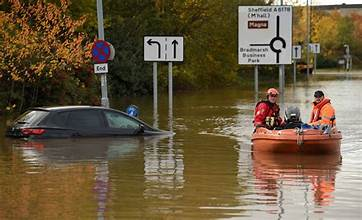

Floods are a natural disaster that can cause significant losses, both economically and socially. Therefore, it is crucial to comprehend and implement an effective flood mitigation process. In this article, I will elaborate in detail on the steps to face and reduce the impacts of floods.
1. Keeping an Eye on Weather and Rivers
To start off, we keep a close watch on the weather and river conditions. Advanced monitoring systems give us accurate info, letting authorities and people get ready for potential floods.
2. Planning Evacuations
Why do we plan evacuations? It's all about mitigating the impact of floods. Figuring out safe evacuation spots, routes, and training folks are key steps to ensure everyone's safety when floods hit.
3. Flood Control Infrastructure
Investing in flood control infrastructure is a practical way to tackle this disaster. Efficient water channels, dams, and good drainage systems can significantly cut down the risk of floods.
4. Managing Absorption Areas
Managing areas that absorb water, like forests and wetlands, is crucial. Maintaining or restoring these ecosystems is key in places vulnerable to flooding.
5. Early Warning Systems
Early warning systems play a vital role in being prepared. Quick alerts through various channels, like text messages and social media, give communities enough time to take preventive measures.
6. Community Engagement
The involvement of the community makes a big impact. Educational programs and awareness about sustainable behaviors help people contribute to flood prevention.
7. Emergency Responsekj87
Handling emergencies requires effective coordination. Well-prepared medical facilities, food provisions, and shelters, along with coordination between authorities and the community, are crucial in emergency response.
"In the face of floods, our resilience is tested, but with proactive measures and community unity, we build a shield against the rising waters, creating a safer tomorrow for all."
Conclusion
By integrating What, Why, How, Where, When, and How Much, the process of tackling floods becomes more effective. It involves full community engagement, infrastructure investment, careful monitoring, and structured evacuation plans to create a safer and more resilient environment against floods.